地政学
プラハはドイツ語圏とスラブ世界の接点にあり、王国、ハプスブルク、共和国、社会主義、欧州連合を経験した首都です。城、省庁、外交、公園、大学が近く、東西欧州の記憶と現在の安全保障が今も重なる要港です。

🇨🇿 チェコ / ヨーロッパ / World City Atlas
ヴルタヴァ川の両岸に広がる中欧の首都です。王国、帝国、共和国、占領、観光、大学、IT、音楽、ビール、郊外住宅が、石畳の景観の奥で重なります。
都市の骨格
プラハはヴルタヴァ川の谷と丘の上の城を軸に、旧市街、新市街、工業地、大学、観光地区、集合住宅地を重ねてきました。美しい景観の背後には、国家の記憶と日常の通勤が同居します。
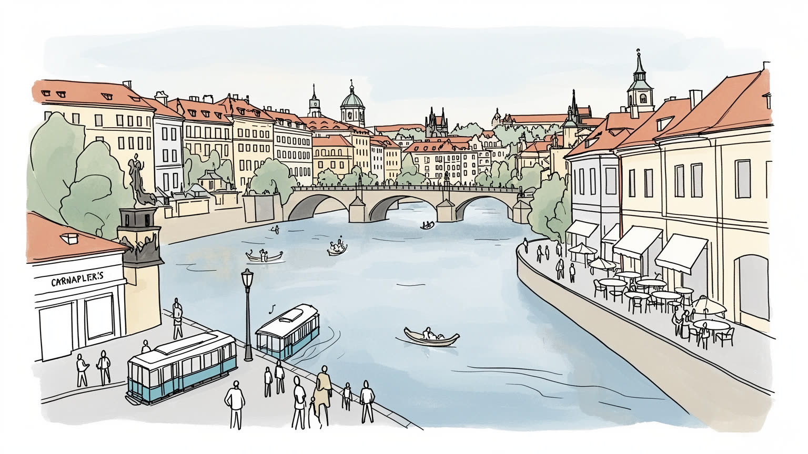
プラハはドイツ語圏とスラブ世界の接点にあり、王国、ハプスブルク、共和国、社会主義、欧州連合を経験した首都です。城、省庁、外交、公園、大学が近く、東西欧州の記憶と現在の安全保障が今も重なる要港です。
観光、IT、金融、大学、行政、文化産業が中心を支え、周辺には自動車や精密製造を結ぶ企業も多いです。ホテル、飲食、清掃、警備、配送、介護の労働が観光都市を動かし、賃金と家賃の差が日常の緊張にもなります。
カトリック教会、ユダヤ人地区、フス派の記憶、世俗的な市民文化、音楽祭、劇場、文学、ビール酒場が重なります。信仰は壮麗な聖堂だけでなく、墓地、記念日、家族行事、静かな市民の祈りとして街に残る力でもあります。
観光客は城、カレル橋、旧市街広場、音楽、ビールを巡りますが、住民には家賃、通勤、混雑、短期賃貸、郊外化が切実です。石畳の美しさと生活の便利さをどう両立するかが、首都の毎日を左右する深い課題でもあります。
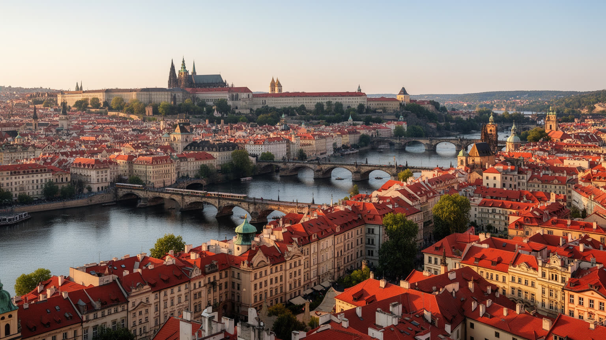
プラハを読む入口は、ヴルタヴァ川とその両岸に立ち上がる丘です。川は旧市街とマラー・ストラナ、城の丘、新市街、郊外を分けながら結び、橋の位置が都市の動線と象徴を決めてきました。カレル橋は観光の舞台にとどまらず、王権、商業、巡礼、日常移動をつないだ都市の背骨でした。川沿いの低地には洪水の記憶があり、堤防、護岸、遊歩道、島、公園、トラムの軌道が暮らしと防災を重ねます。朝夕にはランナーや自転車が河岸を流れ、川霧、石畳を渡るトラム音、冬の冷気が身体で分かる都市の輪郭を作ります。丘の上から見る赤い屋根と塔の連続は強い景観を作りますが、住民にとって坂道は買い物、通学、高齢者の外出、配送の条件でもあります。中心部の狭い街路は美しい一方、観光バス、救急車、自転車、歩行者をさばくには繊細な調整が要ります。川は都市を柔らかく見せますが、洪水、橋の維持、観光船、水質、河岸の土地利用という実務も運びます。プラハの地形は、国家の儀式、生活の移動、災害への備えを同時に形づくっています。川辺の再整備では、散歩道やカフェだけでなく、住民が日常的に使える緑地、子どもの遊び場、避難時の動線を残すことが大切になります。谷の地形は音や風の流れも変え、観光の集中する橋上と静かな住宅街の距離を近くします。水面を軸に地区を眺めると、王都の象徴性と普段の生活圏が一つの断面で見えてきます。
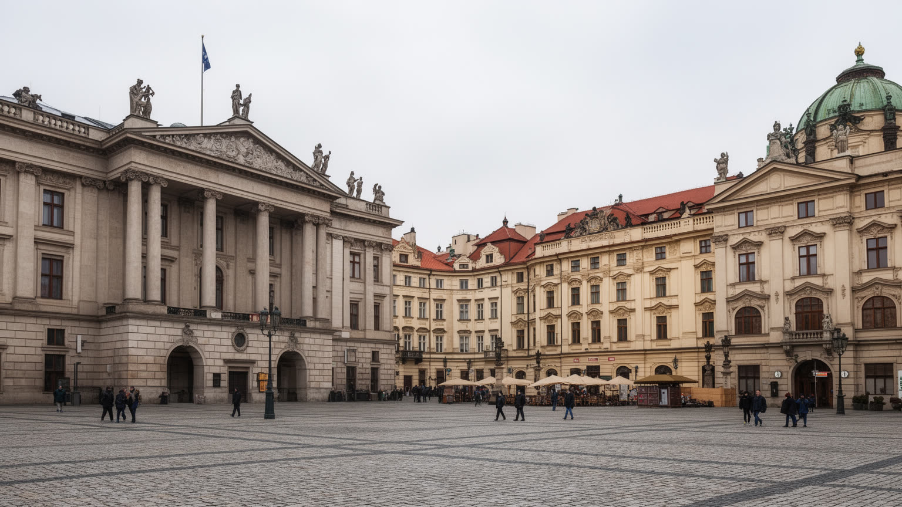
プラハはチェコの首都であり、王国の城と共和国の制度が同じ都市に重なります。プラハ城は大統領府を抱え、聖ヴィート大聖堂や宮殿の景観は、ボヘミア王国、ハプスブルク帝国、チェコスロバキア、現在のチェコ共和国を一続きの政治記憶として見せます。議会、省庁、裁判所、外交公館、大学、報道機関は市内に集中し、国家の意思決定と市民の抗議が近い距離で起こります。ヴァーツラフ広場は商業空間であると同時に、一九六八年の改革運動、占領、ビロード革命、追悼集会を思い起こさせる公共の舞台です。プラハの政治性は、官庁街だけでなく、広場、記念碑、大学の講堂、劇場、地下出版の記憶、市民団体の事務所に散らばります。欧州連合とNATOの一員としての政策、ロシアへの警戒、ウクライナ難民への支援、エネルギー安全保障も、首都の日常に入っています。観光客が城を眺める場所は、国家の象徴を消費する場所でもありますが、住民にとっては政治が生活費、住宅、交通、教育へ触れる場所です。プラハを首都として読むには、古い王権の景観と現代の議会制、市民社会、メディアの監視を同じ視線に置く必要があります。地方都市や農村との所得差、首都への人口集中、外国人労働者の受け入れも政治課題になります。美しい城郭の下で、予算、言語、社会保障をめぐる実務が毎日続いています。外交行事の警備やデモの交通規制も、首都に暮らす人の日常を変えます。
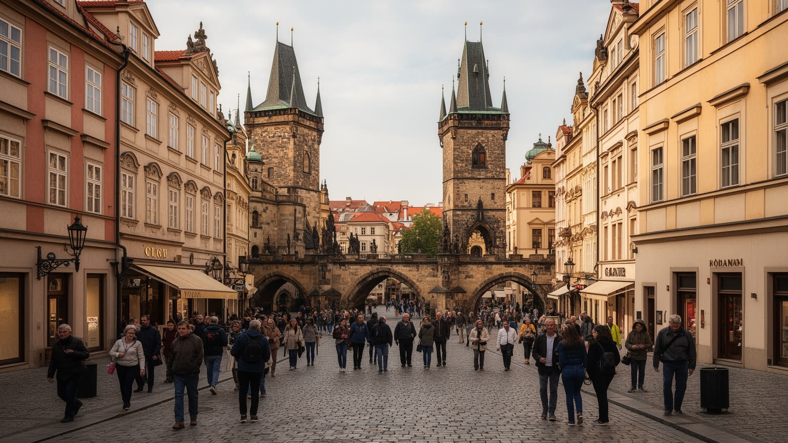
プラハの旧市街は、ヨーロッパでもとくに強い観光吸引力を持ちます。旧市街広場、天文時計、カレル橋、プラハ城、ユダヤ人地区、バロック教会、アールヌーボーの建築は、徒歩圏に濃密な歴史を集めています。第二次世界大戦で大規模な破壊を免れたことも、連続した街並みを残す要因になりました。しかし保存された景観は、住民の生活と観光経済を近づけすぎる面があります。短期賃貸、土産物店、深夜の騒音、団体客の混雑、飲食店の高価格化は、中心部を暮らしの場所から消費の舞台へ変えることがあります。土産物の屋台、両替所、路上演奏、案内ツアーは路上経済を作り、買い物の便利さと客引きの圧力を同時に生みます。観光は雇用と税収を生み、建物修復の財源にもなりますが、清掃、警備、飲食、ホテルで働く人の賃金や住まいは十分に見えにくいです。遺産を守るとは、石の外観を凍結することではなく、学校、食料品店、郵便局、病院、近所の会話が残る都市環境を保つことでもあります。プラハの観光を深く読むには、写真を撮る広場の美しさと、そこを毎朝掃除する人、賃貸契約に悩む住民、教会で祈る人を同じ場面に置く必要があります。混雑を分散する案内、夜間騒音の管理、住民向け店舗の維持は、遺産を生きた都市として残す実務です。保存と観光を分けず、生活の権利まで含めて評価したいです。
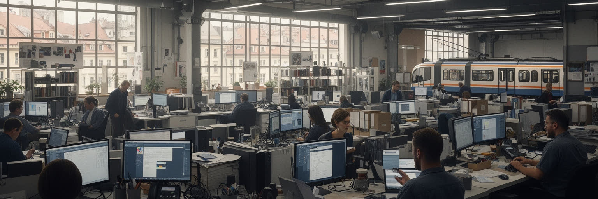
プラハ経済は観光の印象が強いですが、実際には行政、大学、金融、IT、研究開発、企業サービス、メディア、文化産業、製造業の管理機能が重なっています。チェコは自動車や機械工業の厚い国であり、プラハにはその本社機能、設計、物流、法律、会計、マーケティング、外国企業の地域拠点が集まります。カレル大学やチェコ工科大学は人材を育て、スタートアップや外資系IT企業は若い専門職を引き寄せます。テレビ、新聞、配信現場、広告会社は政治都市の議論も形づくります。一方で、観光都市を支える仕事は、ホテル、飲食、清掃、警備、土産物販売、配送、夜間サービスのように賃金が高くないものも多いです。高所得の技術職と不安定なサービス労働が同じ中心部を使い、家賃上昇は低賃金労働者を郊外へ押し出します。国際企業の英語環境は都市を開きますが、チェコ語を使う公共サービスや地域の商店との距離も生みます。プラハを経済都市として読むには、観光客の支出だけでなく、研究室、コワーキング、会計事務所、郊外の物流倉庫、夜勤の清掃員を同じ労働市場として見る必要があります。首都の富は知識産業と歴史的景観の両方から生まれますが、それを支える労働条件と住宅政策が弱ければ、都市の魅力そのものが疲弊していきます。地方から来る学生や若者にとって、首都は機会の入口であると同時に家賃の壁でもあります。
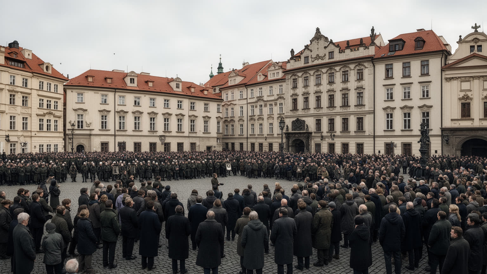
プラハの美しい景観の奥には、占領と抵抗の重い記憶があります。ナチス・ドイツによる保護領時代、ユダヤ人の迫害、抵抗運動、戦後の追放と体制転換、共産党支配、一九六八年のワルシャワ条約機構軍の侵攻、ビロード革命は、都市の広場や記念碑、博物館、家族の記憶に残っています。ヨゼフォフのシナゴーグと旧ユダヤ人墓地は、観光名所であるだけでなく、失われた共同体と欧州ユダヤ史を考える場所です。ヴァーツラフ広場の追悼や学生の自己犠牲の記憶は、自由と国家主権が抽象語ではなく、身体を伴う経験だったことを示します。社会主義時代の集合住宅、地下文化、検閲、秘密警察の影も、中心部の華やかな建築とは別の層として残ります。記憶は単に過去を保存する作業ではありません。現在の民主主義、ロシアへの警戒、難民支援、少数者への態度、歴史教育をどう考えるかに直結します。プラハを歩くと、観光写真に写る塔の下に、暴力と沈黙、抵抗と連帯の痕跡があることが分かります。都市の記憶を尊重するには、悲劇を飾りにせず、誰が語る機会を持ち、どの経験が見えにくいまま残るのかを丁寧に問う必要があります。記念館や学校の授業、家族の墓参り、広場の献花は、過去を現在へ戻す小さな実践です。観光客もその層に触れる時、街の美しさをより深く理解できます。沈黙してきた少数者の声を公共空間へ戻すことも、記憶を未来へ渡す作業です。
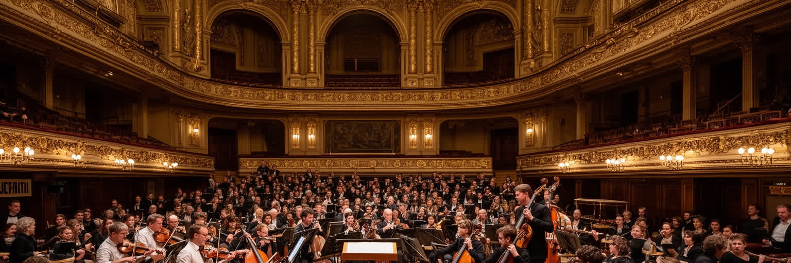
プラハは音楽と文学の都市として強い存在感を持ちます。スメタナ、ドヴォルザーク、モーツァルトの記憶、国民劇場、ルドルフィヌム、教会音楽、室内楽、ジャズクラブ、地下ロックの歴史は、観光向けの演奏だけでなく、市民の文化的な自己像を形づくってきました。春の音楽祭やSignal Festivalはホール、教会、街路を結び、夜にはクラブ、バー、学生のライブや深夜のクラブが別のテンポで街を動かします。文学ではカフカ、チャペック、クンデラ、ハヴェルのように、官僚制、言語、国家、自由、記憶をめぐる問いが都市の経験と結びつきます。カフェや書店、劇場、大学、酒場は、政治的な議論や反体制文化の場にもなりました。宗教面ではカトリックの壮麗な聖堂、フス派の改革の記憶、ユダヤ人文化、世俗化した市民生活が重なり、信仰は建物の美しさだけでは測れません。文化産業は観光収入を得る一方、演奏家、舞台スタッフ、翻訳者、編集者、案内人、バーの従業員の不安定な労働にも支えられます。古い音楽を守ることと、新しいクラブ文化や移民の表現を受け入れることは、都市文化を生かすためにどちらも必要です。プラハの文化を読むには、有名な作曲家や作家の名前を並べるだけでなく、誰が練習場所を持ち、誰が舞台を支え、誰の言葉が公共空間で聞かれるのかを見る必要があります。チケットを買う客席だけでなく、学生の合奏、地区の小劇場、翻訳出版、独立系映画館にも都市の表現は息づきます。
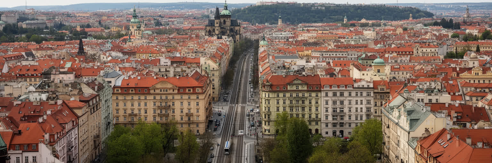
プラハの住宅問題は、中心部の遺産景観、観光、外資、所得上昇、郊外化が絡みます。旧市街やマラー・ストラナの建物は魅力的ですが、短期賃貸や高価格の改修が進むと、長く住んだ人、学生、若い家族、低賃金のサービス労働者は中心から離れざるを得ません。社会主義期に建てられた大規模な集合住宅地は、単調な景観として語られがちですが、多くの住民にとっては学校、商店、公園、地下鉄やトラムに近い現実的な生活基盤です。断熱改修や公共空間の更新が進めば、郊外住宅は負の遺産ではなく、手頃な住まいを保つ重要な資源になります。周辺自治体へ広がる新築住宅や商業施設は、広い住まいを求める世帯を引き寄せますが、自動車依存、通勤時間、農地の転用、インフラ負担を生みます。子どもには通学路と遊び場、高齢者には坂道や凍結した歩道、近所の診療所が生活の質を左右します。プラハを住宅都市として読むには、絵になる中心街だけでなく、団地の中庭、郊外駅前、家賃交渉、相続、学生寮、移民労働者の部屋を見る必要があります。都市の魅力を支える人が住めない街になれば、観光も文化も長続きしません。住宅政策、公共交通、学校、緑地を合わせて考えることが、歴史都市を生活都市として保つ条件です。古い建物の修繕費やエネルギー効率も家計を左右し、若い世代の独立時期に影響します。住まいは景観として眺める以前に、生活を始めるための基盤です。
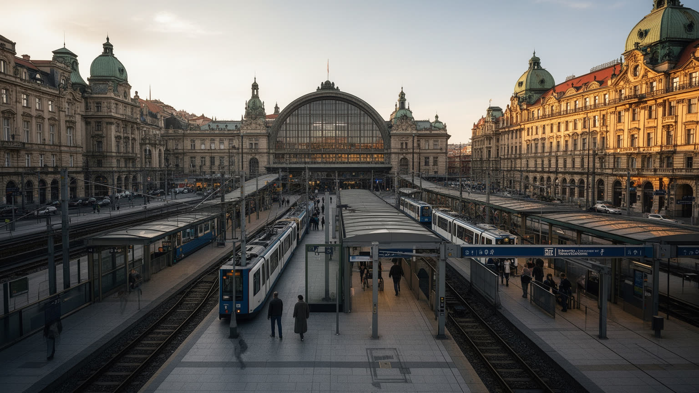
プラハの生活を支えるのは、地下鉄、トラム、バス、郊外鉄道、長距離鉄道が細かく結び合う交通網です。中心部の狭い街路では自動車よりもトラムと徒歩の存在感が大きく、石畳を震わせる車輪の音が旧市街や川沿いの景観と日常を結びます。地下鉄は社会主義期以降の住宅地を中心へ結び、郊外鉄道は周辺自治体からの通勤を支えます。中央駅やマサリク駅は、チェコ国内だけでなくベルリン、ウィーン、ブラチスラバ、ブダペストへ向かう中欧の回廊につながります。空港連絡の改善、駅周辺の再開発、観光客の移動、夜間交通、バリアフリーは、都市の使いやすさを左右する論点です。観光客には古いトラムが絵になりますが、住民には混雑、運賃、乗り換え、終電、ベビーカーや車椅子での移動が日々の負担になります。車の流入を抑え、歩行者空間を守る政策は中心部の質を高める一方、物流や高齢者の移動をどう支えるかも考えなければなりません。プラハを交通都市として読むには、橋を渡る観光客だけでなく、川沿いを走る人、自転車で大学へ向かう学生、夜勤後の労働者を同じ地図に置く必要があります。駅前の再開発が進む場所では、商業床だけでなく乗り換えの分かりやすさ、雨を避ける動線、駐輪場、学生の買い物、近隣商店との関係も問われます。移動の細部が都市の印象を決める重要な条件です。
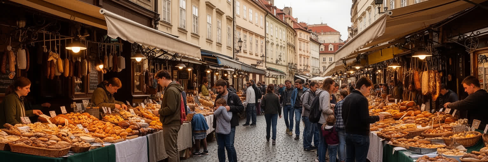
プラハの日常は、城や橋だけでなく、市場、パン屋、ビール酒場、食堂、カフェ、学校帰りのトラム停留所にあります。ビールは観光の記号にとどまらず、同僚や友人が集まり、政治やSparta、Slavia、Bohemiansのサッカー、アイスホッケー、学校や家族の話をする社会的な場を作ってきました。グラーシュ、クネドリーキ、ロースト肉、スープ、焼き菓子、季節の市場は、家庭の記憶と地域の味をつなぎます。冬のクリスマスマーケットでは湯気、香辛料、ビールや焼き菓子の匂いが石畳の冷気に混じります。近年はベトナム系住民の食文化、国際的なカフェ、菜食やクラフトビール、新しいレストランも増え、首都の味は中欧の伝統だけに閉じません。観光地区では価格が上がり、昔ながらの店が土産物化することもありますが、住宅地の食堂や市場には住民の時間が残ります。飲食業は多くの雇用を生む一方、長時間労働、季節需要、家賃、観光客の変動に左右されやすいです。プラハの食を読むには、名物料理を味わうだけでなく、誰が早朝に仕入れ、皿を洗い、ビールを運び、郊外から通勤して店を開けるのかを見る必要があります。食卓は国民文化を示すだけでなく、移民、観光、所得差、近所づきあいを映します。昼の定食や市場の買い物は、住民が街を自分の場所として感じる大切な時間です。
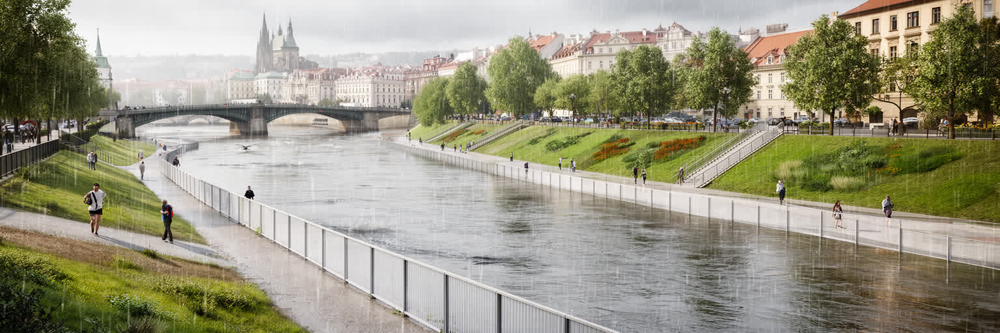
プラハの気候は中欧の内陸性を帯び、寒い冬、暖かい夏、霧、雪、急な雨が都市の季節感を作ります。冬の石畳や塔の景観は美しい一方、凍結、暖房費、古い建物の断熱、高齢者の外出には現実的な負担があります。夏は観光に向く季節である一方、熱波が長くなると、石造りの中心部、木陰の少ない広場、屋外で働く人、エアコンを十分に使えない住宅が影響を受けます。ヴルタヴァ川は都市に涼しさと景観を与えますが、二〇〇二年の大洪水の記憶が示すように、洪水リスクも常にあります。護岸、可動式の防壁、地下鉄入口の防水、避難情報、文化財の保護、河川敷の使い方は、気候時代の都市計画に欠かせません。観光客が多い都市では、多言語の災害情報や暑さ対策も公共サービスの一部になります。緑地、街路樹、透水性の地面、屋根の断熱、学校や病院の冷房は、景観より地味でも生活の質を左右します。プラハを気候の視点で読むには、雪のロマンや川辺の散歩だけでなく、洪水後の復旧、住宅改修、低所得世帯の光熱費、観光シーズンの熱中症を同じ問題として見る必要があります。美しい歴史都市ほど、見えにくい防災と適応が価値を守ります。文化財を守るための温湿度管理、地下空間の排水、冬季の歩道管理も都市の責任です。気候への備えは観光の快適さではなく、住民の安全を支える基礎です。川と丘の都市だからこそ、地区ごとの弱さを細かく把握する必要があります。
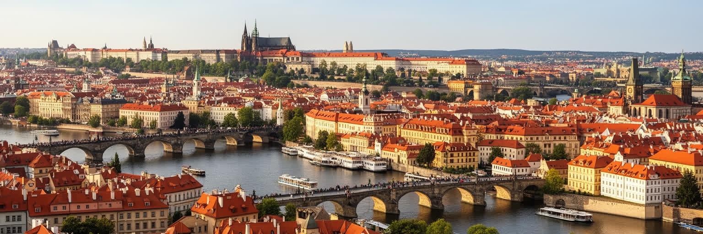
プラハを読むことは、絵葉書のような旧市街を、国家の記憶、観光労働、住宅、交通、産業、宗教、気候の現実と重ねることです。ヴルタヴァ川と城は都市に強い象徴性を与え、王国から共和国までの政治を一望させます。旧市街の保存は世界的な魅力を生みますが、短期賃貸や混雑は生活の足場を揺らします。IT、大学、金融、企業サービスは首都経済を伸ばす一方、ホテル、飲食、清掃、配送の仕事がなければ観光都市は動きません。カトリック、ユダヤ人地区、フス派、世俗化した市民文化は、信仰と記憶の多層性を示します。占領と抵抗の歴史は、現在の民主主義や安全保障を考える土台です。郊外の集合住宅、トラム、鉄道、ビール酒場、市場、学校、スタジアム、カフェは、中心部の美しさだけでは見えない生活都市の姿を支えます。プラハの重要性は、巨大な経済規模だけではなく、中欧の歴史が濃く折り重なる場所で、住民が日常を続けている点にあります。訪れる人の満足と住む人の権利、遺産保存と都市更新、記憶の尊重と新しい産業をどう両立するかが問われます。その問いを歩いて確かめられることが、プラハを世界の都市の中で特別な存在にしています。城から川を見下ろす視線と、郊外駅から中心へ向かう通勤者の視線を合わせると、都市の評価はより具体的になります。美しさを守ることは、そこで働き住む人の時間を守ることでもあります。